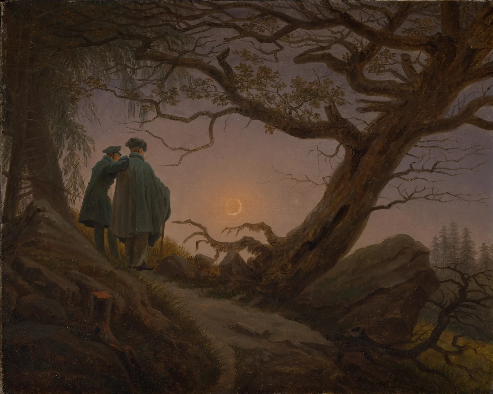

비례: 3분할과 황금비
휴대폰 카메라를 켜면 화면에 가는 선 네 개가 우물 정(井) 자로 그어져 있다. 사진 강좌는 "주인공을 선이 만나는 점에 두라"고 하고, 인터넷에는 명작 위에 소용돌이 모양의 황금 나선을 겹친 그림이 넘쳐 난다. "황금비로 하면 예쁘다"는 말은 너무 자주 들어서 이제는 상식처럼 들린다. 이 장은 그 상식을 직접 손으로 시험한다. 3분할과 황금비가 어디서 왔고 수학적으로 무엇인지, 명작에 대 보면 정말 맞는지, 맞는다면 왜 그렇게 쉽게 맞는지를 본다. 결론부터 말하면 격자는 버릴 것이 아니라 쓰는 자리를 바꿔야 하는 도구다.
- 3분할 격자와 황금비 격자가 화면을 어떻게 나누는지, 둘의 차이가 실제로 얼마나 작은지 숫자로 안다.
- 황금비의 정의와 성질(정사각형을 떼어 내도 같은 모양이 남는 직사각형, 피보나치 수열)을 설명한다.
- 공공 도메인 명작 위에 격자와 나선을 직접 끌어 대 보고, 크기와 위치를 바꾸면 거의 무엇이든 "맞출" 수 있음을 확인한다.
- 황금비 선호 연구와 "명작 속 황금비" 주장의 근거 수준을 구별한다.
- 규칙에 맞지 않는 좋은 그림을 보고, 격자를 처방이 아니라 점검 도구로 쓰는 방법을 익힌다.
점 하나를 어디에 둘까
빈 화면에 점을 하나 찍는다고 하자. 한가운데에 두면 점은 움직이지 않는 것처럼 보인다. 가장자리에 바짝 붙이면 화면 밖으로 밀려나는 것 같다. 그 사이 어딘가에 두면 점과 화면의 네 변 사이에 서로 다른 거리가 생기고, 그 차이가 긴장을 만든다(2장에서 본 점의 위치와 긴장). 3분할과 황금비는 이 "그 사이 어딘가"를 숫자로 정해 보려는 오래된 시도다.
먼저 손으로 느껴 본다. 아래 화면의 붉은 점을 끌어 여러 자리에 놓아 본다. 오른쪽에서 3분할선, 황금비선, 중심선을 하나씩 켜고 끈다. 화면 비율을 바꾸면 같은 규칙이 다른 자리를 가리킨다.
점 하나의 자리: 가운데, 가장자리, 그 사이
가운데와 가장자리는 분명히 다르게 느껴진다. 그런데 3분할선과 황금비선 사이의 차이는 생각보다 작다. 이 장은 이 두 가지 관찰에서 출발한다. 극단(정중앙, 가장자리)을 피하라는 조언은 눈으로 바로 확인되지만, 정확히 어느 선이어야 한다는 주장은 눈으로 구별하기도 어렵다.
3분할: 어디서 왔고 무엇을 말하나
3분할 법칙(Rule of thirds)은 화면을 가로세로 각각 세 등분하는 선 네 개를 긋고, 중요한 요소를 그 선이나 선이 만나는 네 점(흔히 "힘의 점"이라고 부른다) 근처에 두라는 요령이다. 수평선을 화면 한가운데가 아니라 위나 아래 3분의 1 자리에 두라는 조언도 여기서 나온다.
이 이름이 글로 처음 확인되는 것은 영국의 판화가 존 토머스 스미스(John Thomas Smith)의 1797년 책 『전원 풍경에 관한 소견』(Remarks on Rural Scenery)이다. 스미스는 화가 조슈아 레이놀즈가 밝음과 어둠의 넓이 비율에 관해 한 말을 이어받아, 화면을 반반으로 나누기보다 대략 3분의 1과 3분의 2로 나누는 편이 낫다는 생각을 선과 덩어리 전체로 넓혀 "3분할 법칙"이라고 불렀다. 곧 처음부터 정밀한 기하학이 아니라 "반으로 가르지 말라"는 화가의 경험칙이었다. 오늘날 카메라 화면의 격자는 이 경험칙이 장비 안으로 들어온 모습이다.
그림 1의 숫자가 이 장의 첫 번째 핵심이다. 사진 강좌에서 "3분할"이라고 부르는 자리와 디자인 책에서 "황금비"라고 부르는 자리는 서로 아주 가깝다. 어떤 그림의 주인공이 그 근처에 있다면 그 그림은 두 규칙 모두에 "맞는다". 그러니 그 그림이 정확히 어느 규칙을 따랐는지는 위치만으로는 말할 수 없다.
황금비의 수학
황금비(Golden ratio, φ)는 선분을 둘로 나눌 때 "전체 대 긴 부분"이 "긴 부분 대 짧은 부분"과 같아지는 비율이다. 고대 그리스의 수학자 에우클레이데스가 『원론』(기원전 300년경)에서 이 나눔을 "외중비"(extreme and mean ratio)라는 이름으로 다뤘다. 식으로 적으면 다음과 같다.
"황금"이라는 이름은 훨씬 나중에 붙었다. 독일어 "황금 분할"(goldener Schnitt)이라는 말은 1835년 수학자 마르틴 옴(Martin Ohm)의 교과서에서 처음 확인되고, 이 비율이 자연과 예술 전체를 꿰뚫는 미의 법칙이라는 주장은 1854년 아돌프 차이징(Adolf Zeising)이 크게 퍼뜨렸다. 르네상스에는 수학자 루카 파촐리가 『신성한 비례』(De divina proportione, 1509)를 펴냈고 레오나르도 다빈치가 그 책의 다면체 그림을 그렸다. 다만 그 책은 주로 비율과 정다면체의 수학을 다루며, 화가들에게 황금비로 화면을 나누라고 권하는 책이 아니다.
황금비가 수학적으로 특별한 이유는 황금 직사각형(Golden rectangle), 곧 가로세로비가 φ인 직사각형에서 잘 보인다. 이 직사각형에서 짧은 변을 한 변으로 하는 정사각형을 떼어 내면, 남은 직사각형이 다시 가로세로비 φ다. 다시 떼어 내도 또 φ다. 정사각형 안에 사분원을 이어 그리면 황금 나선(Golden spiral)이 된다. 아래에서 직사각형의 비율을 바꿔 가며 이 성질이 φ에서만 성립하는지 확인한다.
정사각형을 떼어 내면 무엇이 남나
정사각형을 떼어도 같은 모양이 남는 성질, 곧 자기 닮음은 φ만의 것이다. 3:2는 두 단계 만에 끝나고 √2는 "1, 2, 2, 2…"로 다른 무늬를 만든다. 이 성질은 φ가 "가장 무리수다운 수"라는 수학적 사실과도 이어진다. 개수 줄이 모두 1이라서 어떤 분수로도 가장 느리게 다가가기 때문이다.
그 "가장 느리게 다가가는 분수들"이 바로 피보나치 수열(Fibonacci sequence) 1, 1, 2, 3, 5, 8, 13, 21, 34…의 이웃한 두 수의 비다. 8/5 = 1.6, 13/8 = 1.625, 21/13 ≈ 1.615, 34/21 ≈ 1.619로 위아래를 번갈아 가며 φ에 다가간다. 그래서 화가가 "5칸 대 3칸", "8칸 대 5칸"으로 화면을 나누면 의도하지 않아도 황금비 근처가 된다. 거꾸로, 그런 비율을 보고 "황금비를 썼다"고 결론 내릴 수도 없다.
격자를 명작에 대 보기
이제 실제 그림에 대 본다. 아래 시뮬레이터에는 메트로폴리탄 미술관의 공공 도메인 작품 세 점이 있다. 처음에는 격자가 그림의 틀과 꼭 맞게 놓여 있다. 작은 표시는 이 책이 고른 그림의 중요한 자리(달, 산꼭대기, 얼굴)다. 격자 안을 끌면 격자가 옮겨지고, 오른쪽 아래 손잡이를 끌면 크기와 비율이 바뀐다. 표시 옆 숫자는 가장 가까운 선까지의 거리다.
명작 위에 격자와 나선을 끌어 대 보기
틀에 꼭 맞는 격자에서는 맞는 것도 있고 안 맞는 것도 있다. 그런데 격자를 조금 옮기고, 조금 줄이고, 나선을 뒤집기 시작하면 거의 모든 표시점에 어떤 선이 지나가게 만들 수 있다. 바로 이것이 "명작 속 황금비" 그림 대부분이 만들어지는 방식이다. 격자의 크기와 위치와 방향을 그림에 맞춰 고르는 순간, 격자는 그림을 시험하는 도구가 아니라 그림에 맞춰 재단한 옷이 된다.

맞추기는 쉽다: 사후에 끼워 맞추기
격자가 그림에 "맞았다"는 것이 무엇을 증명하려면, 아무렇게나 그린 그림에는 잘 맞지 않아야 한다. 그렇지 않다면 맞았다는 사실은 아무것도 말해 주지 않는다. 아래에서 이것을 시험한다. 화면에 "눈에 띄는 점"을 무작위로 뿌린다. 아무 의도도 없는 배치다. 그다음 두 가지 방식으로 격자를 대 본다. 하나는 그림 틀에 고정한 격자, 다른 하나는 크기·위치·방향을 마음대로 골라 점이 가장 많이 걸리게 한 격자(사후 맞춤)다.
무작위 점에도 나선이 맞는다
무작위 점에도 맞춰진 나선이 여러 점을 지난다. 여기서 두 가지를 배운다. 첫째, 어떤 그림 위에 황금 나선이 "잘 맞는" 그림을 보여 주는 것만으로는 화가가 황금비를 썼다는 증거가 되지 않는다. 같은 방법으로 아무 그림에나 나선을 맞출 수 있기 때문이다. 둘째, 공정한 시험이 되려면 격자를 대기 전에 무엇을 잴지(어떤 점, 어떤 틀, 허용 오차 얼마)를 정해야 한다. 이것은 과학에서 가설을 데이터 보기 전에 세워야 한다는 원칙과 같다.
사람들은 황금 직사각형을 더 좋아할까
작가가 황금비를 썼는지와는 별도로, 보는 사람이 황금 직사각형을 더 아름답게 느끼는지도 오래 연구되었다. 이 질문을 실험으로 처음 다룬 사람은 독일의 심리학자 구스타프 페히너(Gustav Fechner)다. 그는 『미학 입문』(Vorschule der Ästhetik, 1876)에서 여러 비율의 직사각형 카드를 늘어놓고 사람들에게 마음에 드는 것을 고르게 한 결과, 황금비 근처가 많이 선택되었다고 보고했다. 실험 미학의 출발점으로 꼽히는 연구다.
그 뒤 한 세기 넘게 비슷한 실험이 반복되었지만 결과는 하나로 모이지 않았다. 심리학자 크리스토퍼 그린(Christopher D. Green)은 1995년 『퍼셉션』(Perception)에 실은 리뷰 「반짝이는 것이 다 금은 아니다」(All that glitters)에서, 황금비 선호를 지지하는 결과와 지지하지 않는 결과가 함께 있고, 직사각형을 보여 주는 방법(고르기, 직접 그리기, 점수 매기기), 어떤 비율들을 함께 보여 주는가, 사람마다의 차이에 따라 결과가 크게 달라진다고 정리했다. 특히 보여 주는 비율의 범위가 선택을 그 가운데 쪽으로 끌어당길 수 있다는 방법상의 문제가 지적되어 왔다. 이 책이 내릴 수 있는 결론은 "황금 직사각형이 특별히 선호된다는 근거는 엇갈린다"는 정도다.
직접 해 보면 이 문제가 손에 잡힌다. 아래에서 다섯 직사각형 가운데 가장 마음에 드는 것을 하나 누른다. 누를 때마다 순서가 섞인 새 묶음이 나온다. 열 번쯤 고른 뒤 "보여 주는 범위"를 바꿔 다시 열 번 고른다.
가장 마음에 드는 직사각형 고르기
자기 선택이 범위를 따라 움직이는 사람이 적지 않을 것이다. 그렇다면 "사람들은 황금 직사각형을 고른다"는 결과도, 실험이 어떤 직사각형들을 보여 주었는지와 떼어서 읽을 수 없다. 그리고 설령 사람들이 단독으로 놓인 직사각형 하나에서 어떤 비율을 조금 더 좋아한다 해도, 그것이 그림 속에서 요소를 어디에 둘지까지 정해 주지는 않는다. 그림의 좋고 나쁨은 직사각형 카드 하나보다 훨씬 많은 것에 달려 있다.
규칙이 맞지 않는 좋은 그림
3분할 규칙이 피하라고 하는 자리, 곧 정중앙과 화면을 반으로 가르는 선에도 좋은 그림은 많다. 정중앙은 움직임을 멈추게 한다. 그것이 약점일 때가 있고, 바로 그것이 필요할 때가 있다. 정면을 보는 초상, 대칭인 건물, 소실점으로 빨려 드는 길, 예배를 위한 성화처럼 "흔들림 없음"이나 "마주 봄"이 주제인 그림이 그렇다.

같은 주제를 3분할로 놓은 것과 가운데에 놓은 것을 나란히 놓고 비교해 본다. 주제를 바꿔 가며 두 화면을 견준다. 어느 쪽이 "맞는지"가 아니라, 각 배치가 무엇을 말하는지를 본다.
3분할에 놓기와 가운데에 놓기
세 주제 모두에서 두 배치는 서로 다른 것을 말한다. 3분할은 흔히 "공간과 움직임", 가운데는 "정지와 마주 봄"을 만든다. 3분할이 초보자에게 유용한 이유는, 아무 생각 없이 찍으면 주인공을 기계적으로 한가운데에 놓기 쉽기 때문이다. 3분할은 그 습관을 깨는 데 좋은 첫 처방이다. 하지만 처방이 목적이 되면 프리드리히의 달이나 두초의 성모 같은 그림은 나올 수 없다.
격자를 점검 도구로 쓰기
그렇다면 격자는 버려야 할까. 그렇지 않다. 격자는 화면을 정하는 처방이 아니라 이미 놓은 화면을 다시 보는 점검 도구일 때 가장 쓸모 있다. 점검할 것은 대략 세 가지다. 주인공이나 수평선이 무심코 정중앙이나 화면을 반 가르는 자리에 놓이지 않았는가. 중요한 것이 가장자리에 닿거나 너무 가깝지 않은가. 큰 덩어리들이 모두 같은 크기로 나뉘어 있지 않은가. 세 가지 모두 "피해야 할 극단"을 찾는 질문이고, 정확한 선을 찾는 질문이 아니다. 그래서 선보다 띠로 보는 편이 낫다.
마지막 시뮬레이터는 이 장 전체를 모은 작업대다. 서윤의 겨울 과제 세 화면, 곧 A2 세로 포스터, 폭 2.4m 쇼윈도, 웹 16:9 첫 화면 위에서 큰 면, 작은 점, 제목 띠를 끌어 배치하고 격자를 겹친다. 오른쪽 아래 점검 목록은 정확한 선이 아니라 피해야 할 극단(정중앙, 가장자리, 반 가르기)을 알려 준다.
비례 작업대: 배치를 끌고 격자로 점검하기
작업대에서 본 것처럼, 웬만큼 균형 잡힌 배치는 대개 두 격자 모두에 맞는다. 격자가 정말 일을 하는 순간은 무언가가 극단에 걸렸을 때다. 그때 격자는 "의도한 것인가?"라고 묻는다. 의도했다면 그대로 두고, 아니라면 띠 안으로 옮긴다. 판단은 여전히 그림이 무엇을 전하려는가에 달려 있다.
서윤의 작업 노트
"황금비로 하면 예쁘다던데요"
12월 첫 주, 서윤이 낭독회 포스터의 썸네일과 쇼윈도 진열 사진을 들고 가자 주인이 휴대폰 화면을 내밀었다. 유명한 그림 위에 소용돌이 나선이 겹쳐진 이미지였다. "이거 보니까 명작은 다 황금비로 그렸다던데요. 우리 포스터도 황금비로 하면 예쁘지 않을까요?" 서윤은 대답 대신 그날 저녁 도경의 작업실에서 직접 대 보기로 했다.
먼저 포스터. A2는 420 × 594mm다. 3분할선은 가로 140·280mm, 세로 198·396mm에, 황금비선은 가로 약 160·260mm, 세로 약 227·367mm에 지나간다. 가로로는 20mm, 세로로는 29mm 차이다. 서윤의 썸네일에서 작은 점(2장에서 정한 "큰 면 하나 + 작은 점 하나"의 점)의 중심은 가로 약 64%, 세로 약 64% 자리, 곧 약 269 × 380mm에 있었다. 가장 가까운 3분할선과는 11mm와 16mm, 황금비선과는 9mm와 13mm 떨어져 있었다. 둘 다 변 길이의 3% 안쪽이었다. "어느 쪽으로 봐도 맞는다는 건, 격자가 이 자리를 정해 준 게 아니라는 뜻이네." 서윤의 말에 도경은 고개를 끄덕였다. "자리는 네가 스케치하면서 정했지. 격자는 나중에 확인한 것뿐이고."
다음은 쇼윈도. 폭 2.4m 창에서 3분할선은 왼쪽에서 80·160cm, 황금비선은 약 92·148cm다. 8장에서 정한 빨간 표지 책은 왼쪽에서 155cm 자리였다. 3분할선과 5cm, 황금비선과 7cm 차이다. 길 건너 약 6m에서 보면 그 차이는 손가락 한 마디보다 작게 보인다. 서윤은 책을 1cm도 옮기지 않았다.
주인의 다른 제안, 포스터 종이 자체를 황금 직사각형으로 바꾸는 안도 계산해 보았다. 폭 420mm를 지키면 높이는 약 680mm가 된다. A2의 가로세로비는 1 : √2(약 1.414)이고, 이 비율에는 이유가 있다. 반으로 접어도 같은 비율이 남아(A2를 접으면 A3) 인쇄소의 종이, 액자, 게시판이 모두 이 규격에 맞춰져 있다. 황금비가 정사각형을 떼어도 같은 모양이 남는 비율이라면, √2는 반으로 잘라도 같은 모양이 남는 비율이다. 서윤은 A2를 그대로 쓰기로 했고, 주인에게는 그 휴대폰 이미지 위의 나선을 한 번 뒤집고 조금 줄이면 다른 곳에도 똑같이 "맞는다"는 것을 이 장의 시뮬레이터로 보여 주었다. 주인은 웃으며 "그럼 예쁜 건 황금비 덕이 아니라 서윤 씨 덕이네요" 했다.
그런데 점검은 다른 곳에서 걸렸다. 썸네일에서 제목 띠의 중심이 세로 50% 자리에 정확히 걸려 포스터를 위아래로 반 가르고 있었다. 서윤이 의도한 것은 아니었다. 도경은 "반 가르기는 일부러 할 때만 하는 거야"라며 제목 띠를 위쪽 편한 띠(세로 33~38%)로 올려 보라고 했다. 그러자 큰 면과 제목이 서로 다른 무게를 갖게 되었다.
핵심 정리
- 3분할은 18세기 말 "반으로 가르지 말라"는 화가의 경험칙에서 나온 요령이다. 정밀한 기하학이 아니라 정중앙과 반 가르기를 피하게 하는 첫 처방이다.
- 황금비 φ ≈ 1.618은 "전체 : 긴 부분 = 긴 부분 : 짧은 부분"인 비율이다. 황금 직사각형은 정사각형을 떼어도 같은 모양이 남는 유일한 직사각형이고, 피보나치 수의 이웃한 비가 φ에 다가간다.
- 황금비선(0.382, 0.618)과 3분할선(0.333, 0.667)의 차이는 변 길이의 약 5%다. 주인공이 그 근처에 있으면 두 규칙 모두에 맞으므로, 위치만으로 어느 규칙을 썼는지 말할 수 없다.
- 격자의 크기·위치·방향을 그림에 맞춰 고르면 무작위 점에도 나선이 맞는다. "명작 속 황금비" 그림 대부분은 이런 사후 맞춤이며, 공정한 시험은 격자를 대기 전에 잴 것을 정해야 한다.
- 황금 직사각형 선호 연구는 페히너(1876) 이후 결과가 엇갈리며, 보여 주는 방법과 비율의 범위에 따라 결과가 달라진다.
- 정중앙과 대칭이 주제에 맞는 좋은 그림도 많다(정면 초상, 성화, 소실점으로 향하는 길). 규칙을 깬 것이 아니라 다른 목적의 질서를 고른 것이다.
- 격자는 처방이 아니라 점검 도구로, 선이 아니라 띠로 쓴다. 극단(무심한 정중앙, 반 가르기, 가장자리)을 찾고, 그 자리를 의도했는지 묻는다.
확인 퀴즈
1. 어떤 그림의 주인공이 화면 왼쪽에서 폭의 36% 자리에 있다. 이 사실만으로 말할 수 있는 것으로 가장 알맞은 것은?
2. 가로세로비가 φ인 황금 직사각형에서 짧은 변을 한 변으로 하는 정사각형을 떼어 냈다. 남은 직사각형에 대한 설명으로 옳은 것은?
3. 누군가 유명한 그림 위에 황금 나선을 겹친 이미지를 보여 주며 "나선이 주요 인물을 정확히 지나니, 화가는 황금비를 썼다"고 말한다. 이 주장의 가장 큰 약점은?
4. 서윤이 낭독회 포스터를 황금 직사각형 종이로 바꾸지 않고 A2(1 : √2)를 그대로 쓰기로 한 이유로 가장 알맞은 것은?